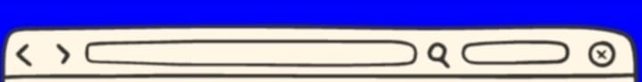

|
|
 | |
|  | ||
student at Eastern Visayas State University – Carigara Campus, currently pursuing a Bachelor of Science in Information Technology (BSIT). I’m passionate about learning, growing, and making the most out of every opportunity that comes my way. Outside of my studies, I enjoy playing sports and staying active—it’s my way of staying balanced and energized. I’m excited to explore new experiences, meet new people, and make the most of my college journey. This blog is a space where I’ll be sharing my thoughts, stories, and everything in between. Thanks for joining me on this adventure! |